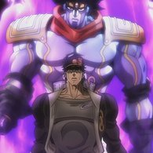
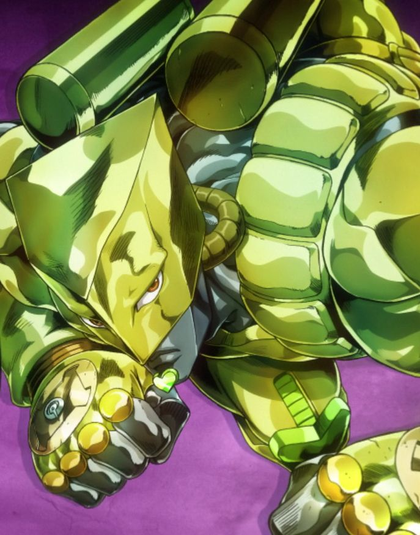
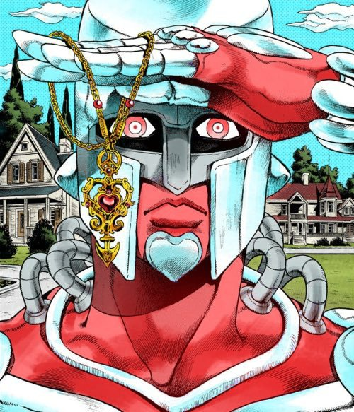
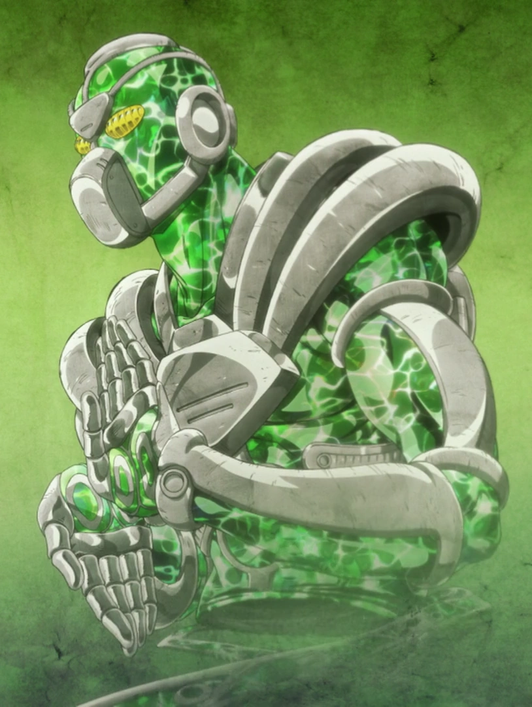
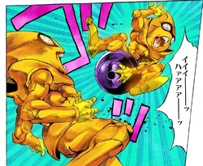
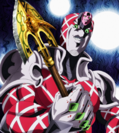
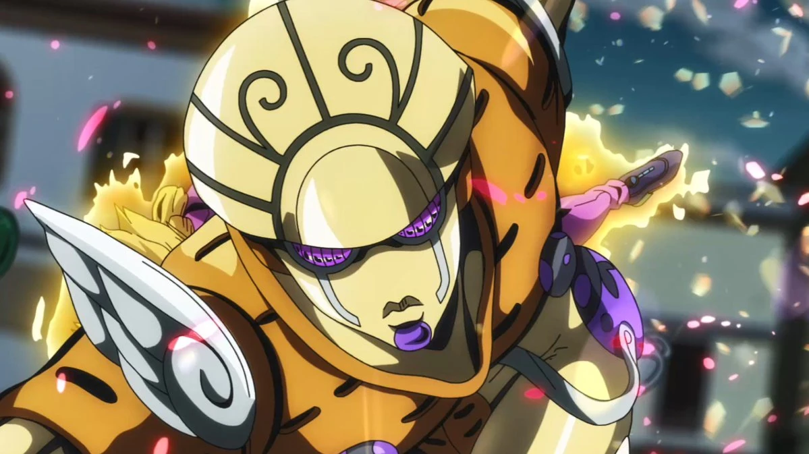
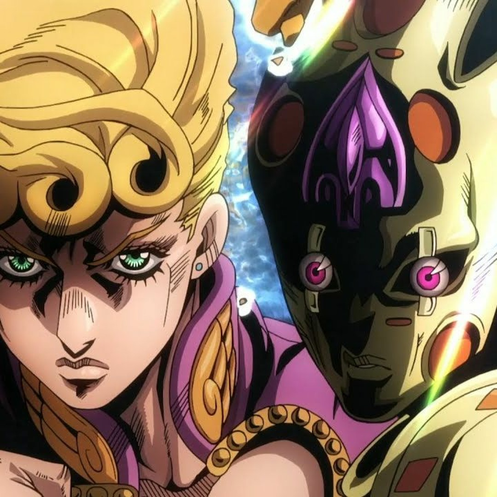
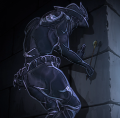

Галерея стендів

Star Platinum

The World

Crazy Diamond
Дальні стенди
Дальні стенди мають здатність діяти на великій відстані від свого власника. Вони зазвичай використовуються для атак дальньої дії, розвідки або шпигунства.
Приклади:
- Hierophant Green: Стенд, здатний маніпулювати енергією на великій відстані.
- Sex Pistols: Груповий стенд, що керує кулями на відстані.

Hierophant Green

Sex Pistols
Ближні стенди
Ближні стенди вимагають близького контакту для використання своєї сили, але часто компенсують високою швидкістю та силою.
Приклади:
- King Crimson: стенд що може передбачити майбутнє та стерти до 10 секунд часу, роблячи себе невидимим.
- Gold Experience: Здатний не тільки атакувати, але й зцілювати, або робити не живі предмети живими.

King Crimson

Gold Experience
Як отримати стенд?
Стенди можуть бути отримані різними способами:
- Після пробудження здібностей через Стрілу (Stand Arrow).
- Як успадкована здатність через генетику (як у родини Джостарів).
- Через вплив певних магічних або природних сил.
Реквієми
Реквієми — це особлива форма стендів, що виникає після впливу стріли на вже існуючий стенд. Вони мають неймовірно сильні здібності.
Приклади:
- Gold Experience Requiem: Надає абсолютний контроль над реальністю.
- Silver Chariot Requiem: Викликає хаос у душах і тілах всіх навколо.

Gold Experience Requiem

Silver Chariot Requiem